From Ch1
What is scarcity ? What does it force?
From Ch1
Opportunity cost = ___ + ___
Your exit ticket
Name the non-monetary cost you identified last class
Ch1 gave you the big ideas. Today: the tools economists use to test them.
ECON 1116 • Principles of Microeconomics • Chapter 2
Dr. Richeng Piao
Department of Economics
Northeastern University
2.1
Explain why economists use simplified models and what role assumptions play
2.2
Distinguish positive statements from normative statements
2.3
Read and interpret basic economic graphs
2.4
Explain the difference between correlation and causation
2.5
Describe how economists use experiments to test theories
From Ch1
What is scarcity ? What does it force?
From Ch1
Opportunity cost = ___ + ___
Your exit ticket
Name the non-monetary cost you identified last class
Ch1 gave you the big ideas. Today: the tools economists use to test them.
In 2014, Seattle raised the minimum wage to $15/hour — far above the federal $7.25. Two research teams studied the SAME city, SAME policy, SAME time period.
Team 1: Jardim et al. (UW)
Low-wage workers lost $125/month . Employers cut hours so sharply the wage hike backfired.
Team 2: Dube (UMass)
Negligible job losses. 2024 meta-analysis: 10% wage increase → only 1.3% employment drop.
Same city. Same policy. Opposite conclusions.
How is that possible? Hold that question — we'll answer it in 45 minutes.
Section 1
LO 2.1: Why economists simplify — and when simplification breaks
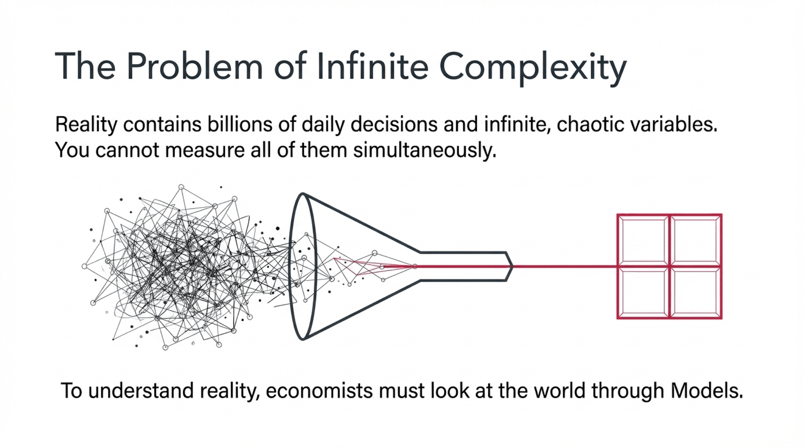
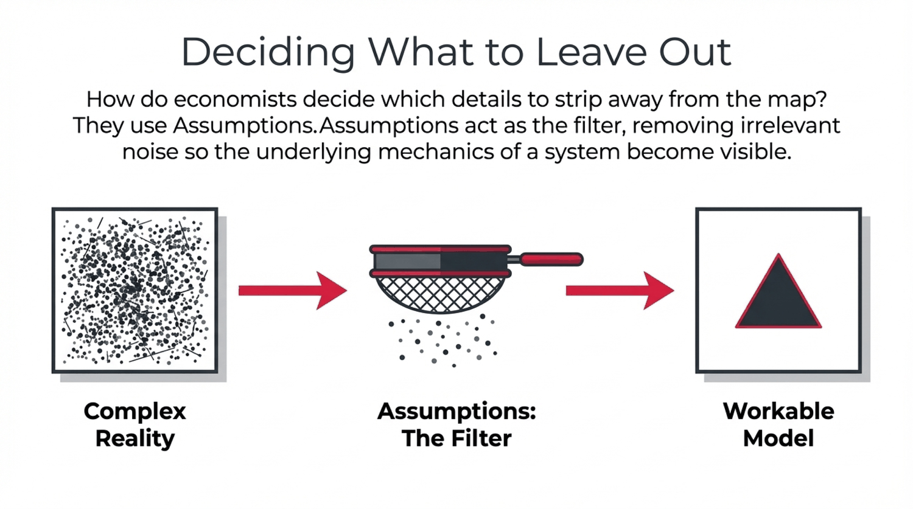
Key Concept
Economic Model
A simplified representation of reality that isolates key variables and relationships
Key Concept
Assumption
A simplifying condition. Test: "Does it predict well?" not "Is it realistic?"
When models fail: Bank of England's inflation models collapsed in 2021-22. Bernanke found the problem: outdated assumptions about supply chains, not bad data.

Product markets (top): Firms sell goods & services to households
Factor markets (bottom): Households sell labor, land, capital to firms
Money flows in a loop: households spend → firms earn revenue → firms pay wages → households spend again.
Real flow of goods/factors (dashed, outer) vs. money flow (solid, inner) — from the textbook
Caption: Every dollar households spend on goods becomes revenue for firms; every dollar firms pay in wages and rent becomes income for households — creating a continuous loop through product markets (top) and factor markets (bottom).
A weather model predicts rain 70% of the time.
It assumes flat terrain and no buildings. Which is true?
A
The model is wrong because buildings exist
B
The model is useful despite unrealistic assumptions
C
We need a model that includes every building
D
We can't trust any model with false assumptions
B is Milton Friedman's answer. Models are judged by predictive accuracy , not assumption realism. A weather model that simplifies terrain still predicts rain 70% of the time — and that's what matters.
Our economic models for this lecture make heroic simplifications — "rational actors," "no transaction costs" — yet they predict labor markets, pricing, and policy outcomes well enough that Amazon, Google, and the Fed bet billions on them.
Key insight: The map isn't the territory. A useful model strips away noise to reveal signal — just like the circular-flow diagram, which ignores government and banks but captures the essential interconnection of the economy.
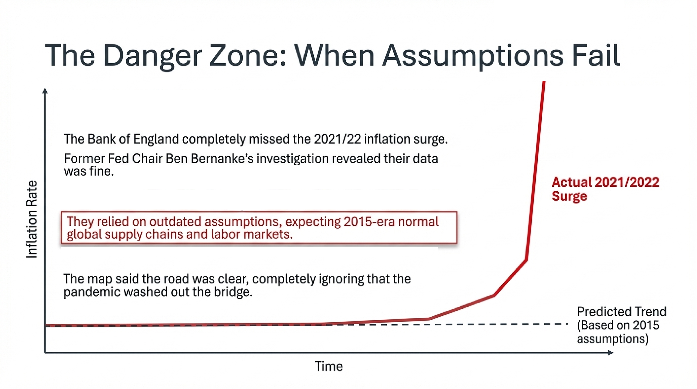
Section 2
LO 2.2: Facts you can test vs. values you can't
Key Concept
Positive Statement
How the world IS . Can be tested with data.
"A higher min wage reduces teen employment."
Key Concept
Normative Statement
How the world SHOULD BE . Reflects values.
"The government should raise the min wage."
This distinction explains why smart, well-informed people look at the same evidence and recommend completely different policies. 93% of economists agree rent ceilings reduce housing quality (positive). They disagree on whether rent control is net good (normative).
Positive (testable)
Bloom's RCT at Trip.com (1,612 employees, published in Nature )
Zero negative impact on productivity
-33% quit rate (worth ~8% salary increase)
Normative (values)
"Companies should require return to office"
85% of managers distrusted remote work — even after seeing the data
Pre-experiment: managers predicted -2.6% productivity. After: revised to +1.0% . Data changed the positive claim — but not the normative question.
Same positive facts (AI capabilities, deployment risks) — opposite normative responses across three jurisdictions
EU AI Act (2024)
Risk-tiered. High-risk systems must register, audit, document. Fines up to 7% of global revenue .
Normative claim: precaution > speed
US (2025)
Federal deregulation push. California SB-1047 vetoed by Newsom. Voluntary safety commitments only.
Normative claim: speed > precaution
China
Mandatory model registration, content controls, state-driven governance. Aligned with party priorities .
Normative claim: stability > openness
No amount of new RCTs or capability benchmarks can resolve this disagreement — it's a contest of values, not facts.
Bloom's Level 2-3: Understand & Apply
With a partner: classify each as Positive (P) or Normative (N)
1. "Raising min wage to $20 would reduce teen employment by 5%."
2. "The government should raise the minimum wage to $20."
3. "Remote work reduces commuting costs by $4,000/year."
4. "Companies should allow employees to work from home."
5. "Rent control reduces the quantity of available housing."
6. "Society would be better off without rent control." ⭐ tricky
3 min pairs → 3 min whole-class
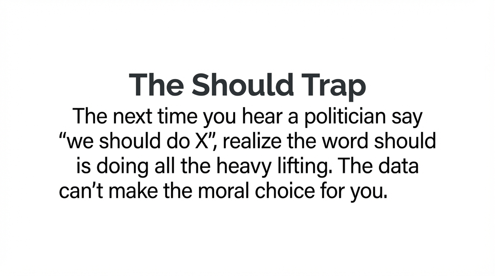
5 minutes
Be back at the wall clock + 5.
Section 3
LO 2.3 + 2.4: Read graphs critically — and know when correlation lies
Every economic graph maps a relationship between two variables . Three patterns matter most:
↗
Positive
X up → Y up
Education ↔ income
↘
Negative
X up → Y down
Price ↔ quantity demanded
→
No relationship
Random scatter
Shoe size ↔ GPA
Scatter: two variables across many units, one moment in time
Time series: one variable tracked over time
Bar chart: compare discrete categories or groups
Before believing what a chart claims, ask five questions :
1. What's on each axis? Units, scale, log vs. linear?
2. What's the time window? Cherry-picked? Includes recessions?
3. What's the comparison? Apples-to-apples or rigged?
4. Where's the counterfactual? What would have happened anyway?
5. What's missing? Hidden third variables, omitted years, excluded groups
Common red flags: truncated y-axis, dual axes that hide scale, "since [favorable date]" framing, percent-change-of-percent-change.
Correlation
Two variables move together . Could be positive, negative, or zero.
Causation
One variable directly produces a change in another. Must rule out alternatives.
Three reasons X and Y correlate:
X → Y
Education causes higher income
Y → X
Reverse: rich people afford more education
Z → X, Y
Omitted variable: family background drives both
r = 0.99: Margarine consumption ↔ Maine divorce rate
r = 1.00: Name "Stevie" popularity ↔ Netflix stock price
r = 0.98: Number of websites ↔ wind power capacity
Source: tylervigen.com — Both variables follow similar time trends (population growth, technology adoption), not causal links.

Ice cream sales and drowning deaths are highly correlated. Why?
A
Ice cream causes drowning
B
Drowning causes ice cream sales
C
Hot weather causes both
D
Pure coincidence
C is correct. The third variable — summer heat — drives ice cream sales AND drives people into pools, lakes, and oceans. Neither one causes the other.
Why this matters: An AI that finds correlations in milliseconds would flag "ban ice cream to save lives." A trained economist asks: what's the omitted variable?
Key insight: Whenever you see two things move together, the question isn't "are they correlated?" — it's "why?" Three suspects: X causes Y, Y causes X, or Z causes both.
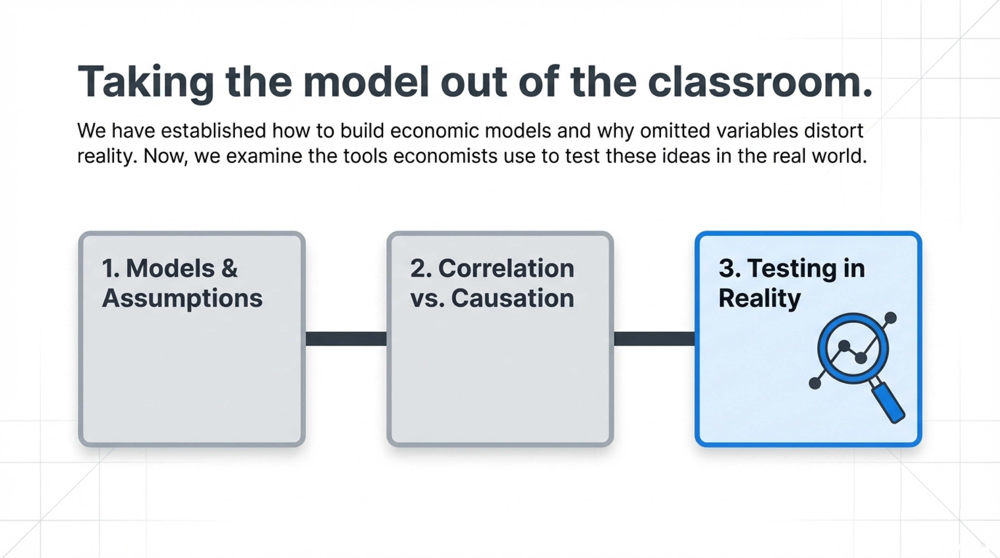
Section 4
LO 2.5: From theory to evidence — the credibility revolution
Gold Standard
Randomized Controlled Trial
Randomly assign people to treatment or control. Any difference = causal effect .
Example: Bloom's remote work study at Trip.com
Next Best
Natural Experiment
An external event creates near-random treatment/control groups without anyone designing it .
Example: Card & Krueger's NJ vs PA minimum wage
The credibility revolution: Angrist, Imbens, Card won the 2021 Nobel for developing these methods. Economics transformed from theory-only to evidence-based.
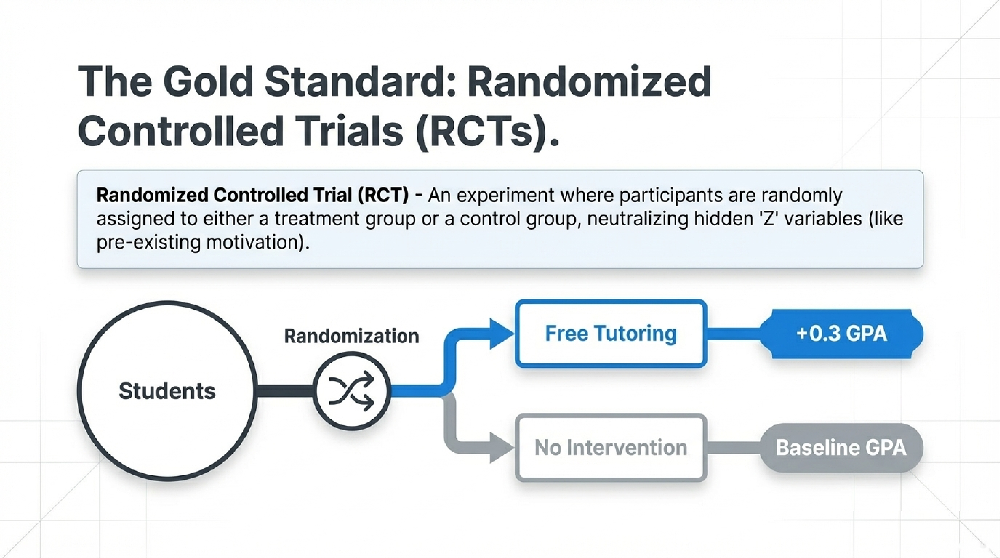
Tech firms run RCTs on millions of users at once . Random assignment to version A vs. B reveals what causes clicks, retention, revenue.
Netflix
Thumbnail A/B tests → +20-30% click-through. Sequential testing flags winners in real time.
Amazon
150+ economists led by Pat Bajari. Every checkout button, ranking algorithm, and price runs through A/B tests before launch.
Airbnb
Peter Coles uses ML counterfactuals to handle selection bias when full randomization isn't possible.
Uber
Surge-pricing experiments isolated the causal effect: surge ON → 2.6 min wait; surge OFF (NYE outage) → 8 min wait, 25% unfulfilled.
A/B testing makes the credibility revolution continuous and corporate . Every click on Netflix or Amazon is part of someone's experiment.
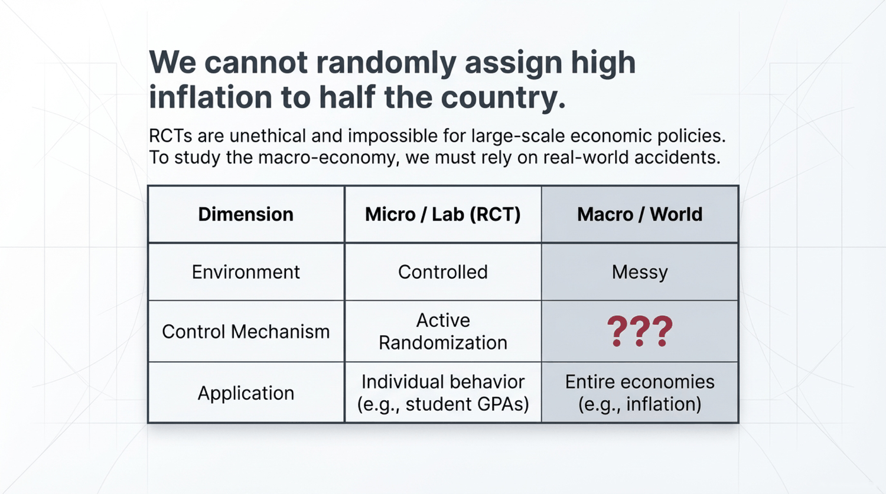
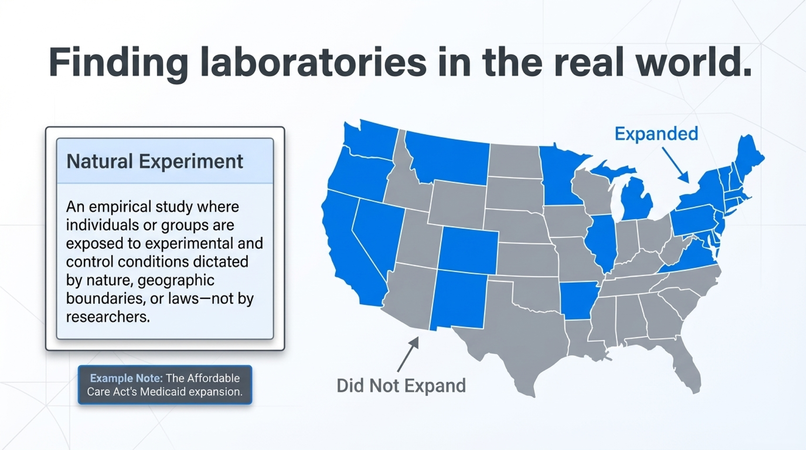
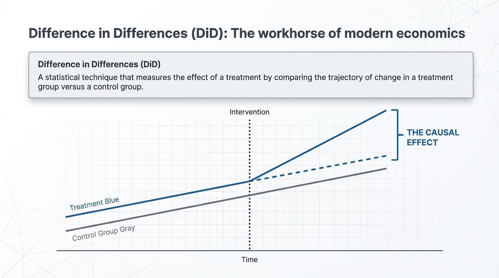
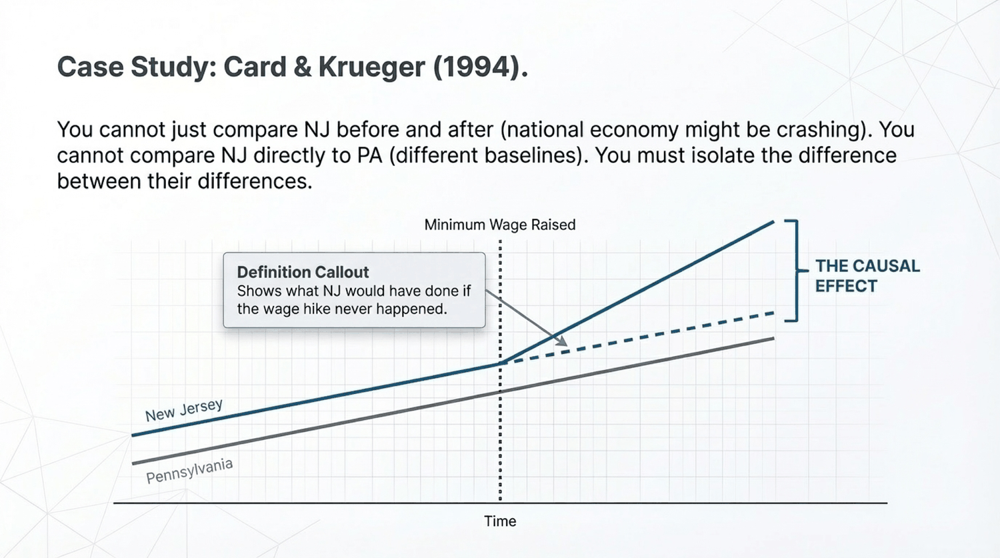
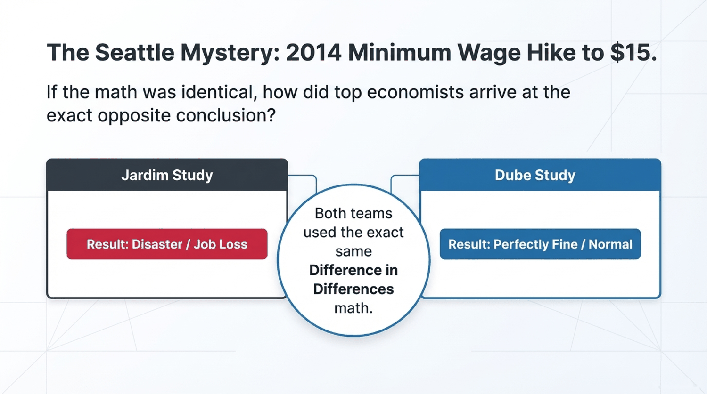
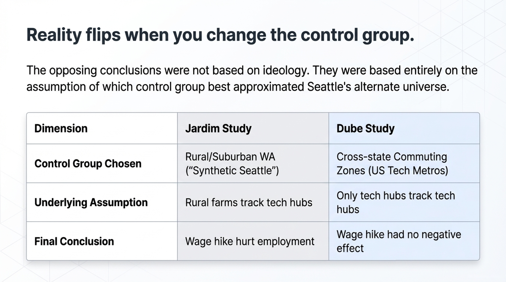
Which provides the STRONGEST evidence of causation?
A
Before-and-after comparison
B
Correlation analysis
C
Natural experiment + DiD
D
Randomized controlled trial
D is the gold standard. Random assignment eliminates every confounder — observed and unobserved. C (natural experiment + DiD) is the next-best when you can't randomize. A is weak; B tells you nothing about why .
Real-world ranking: Bloom's Trip.com RCT (D, 1,612 employees) > Card & Krueger NJ/PA (C, natural experiment) > "Crime fell after we hired more police" (A) > "States with more police have less crime" (B).
Why C is so important: You can't randomly assign half a country to get a $15 minimum wage. Natural experiments + DiD are how economists answer the questions RCTs can't reach.
Groups of 3-4. Your verdict: CAUSAL | CORRELATION | NEEDS MORE EVIDENCE
1. "States that expanded Medicaid see lower uninsured rates"
2. "People who eat breakfast earn higher salaries"
3. "New CEO takes over — stock price rises 40%"
4. "Randomized study: free tutoring raises GPA by 0.3"
5. "Countries with more internet access are wealthier"
6. "After rent control, building permits dropped 79%"
4 min group work → 3 min debrief
Post Hoc Fallacy
"After this, therefore because of this"
"Markets rally as President speaks" — timing ≠ causation
Omitted Variable Bias
A hidden Z drives both X and Y
Seattle redux: Dube's critique — tech boom (Z) was pulling workers up, masking job loss
Composition Fallacy
True for one ≠ true for all
Paradox of thrift: If everyone saves more, spending collapses
Simpson's Paradox
Subgroup trends reverse when combined
Hong Kong 2024: participation rising in every age group, falling overall (aging)
These traps catch even experienced analysts. The cure: better data, better questions, and the tools you learned today.
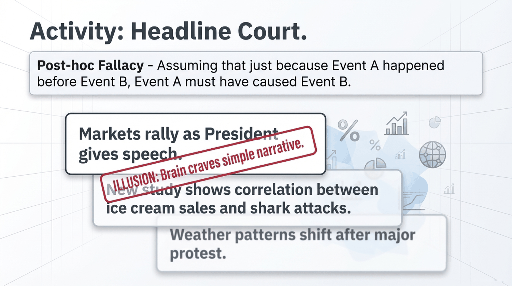
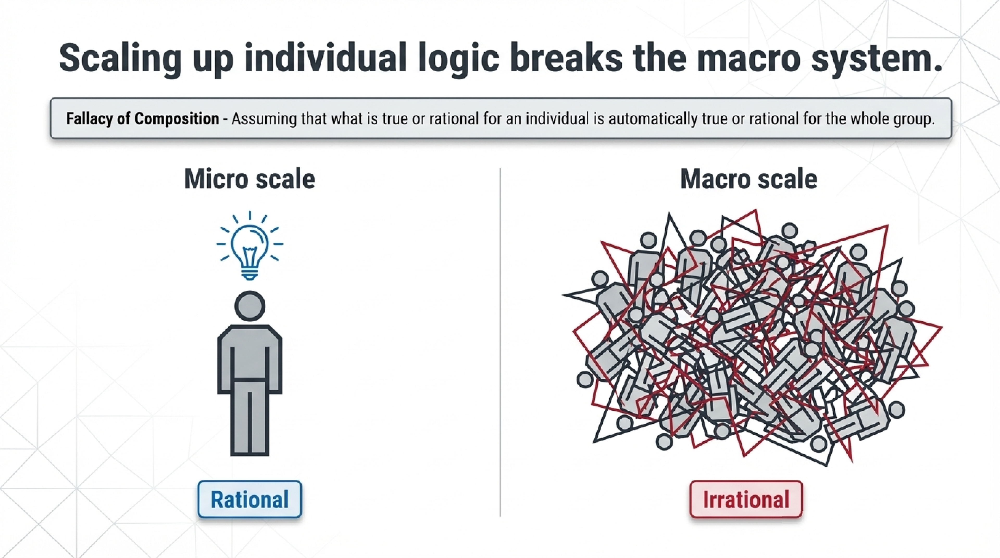
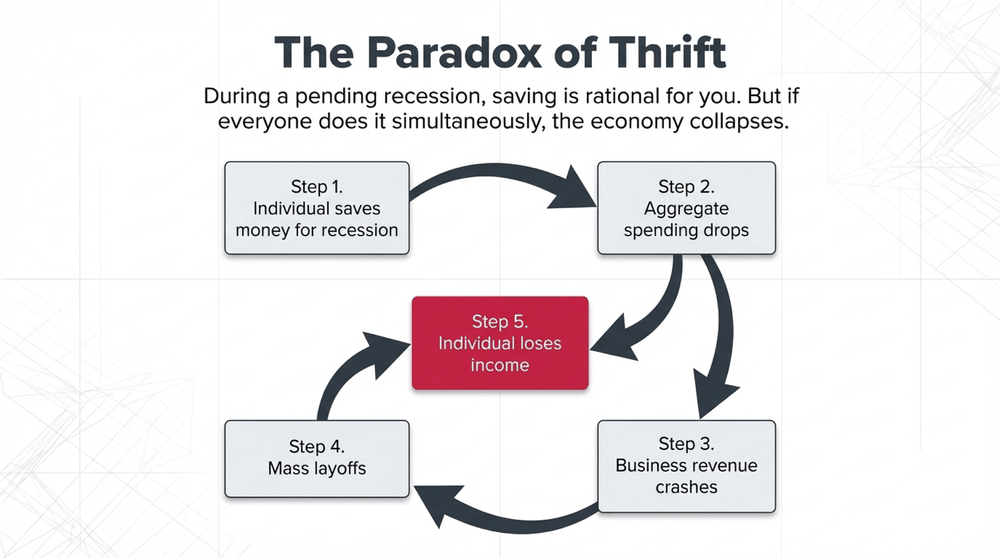
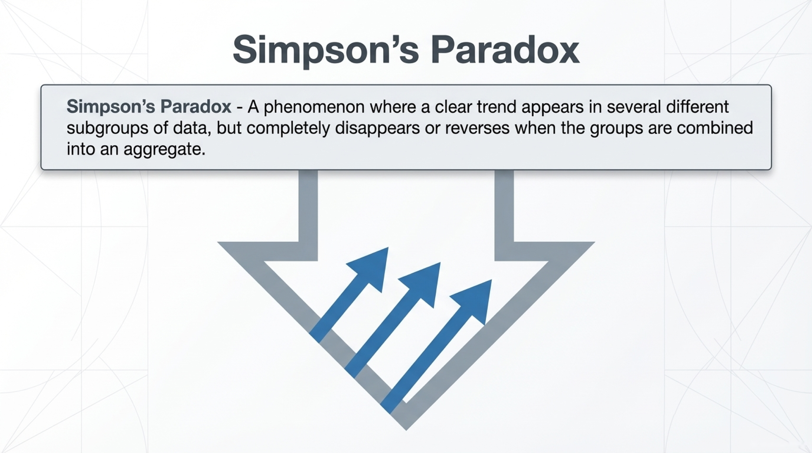
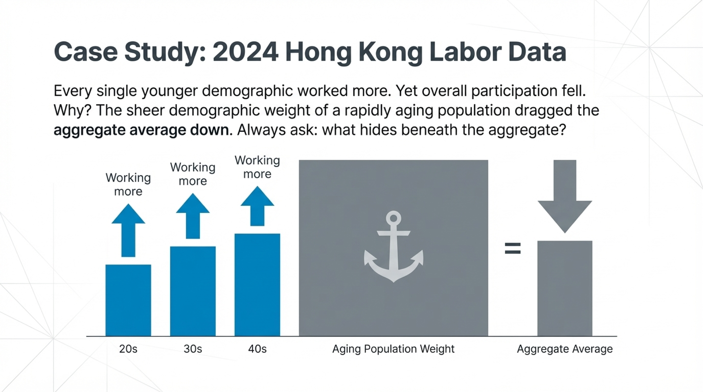
🗺️
Models
Maps, not mirrors. Judge by predictions.
⚖️
Positive vs Normative
IS vs SHOULD. Most debates are normative.
🔗
Correlation ≠ Causation
Always ask: what's the omitted variable?
🔬
Credibility Revolution
RCTs + natural experiments + DiD
⚠️
Watch for Pitfalls
Post hoc, composition, Simpson's
"AI can find correlations in seconds. It takes an economist to know whether they mean anything."
Write one positive statement and one normative statement about your major or intended career.
Tests LO 2.2 — can you generate (not just classify) both types?
Enter your answer in Ch 2 Attendance — M2 on Canvas
Next class: Chapter 3 — the Production Possibilities Frontier. Our first real model.
AI finds correlations in seconds. Causal reasoning is the human moat.
Korinek (2024): LLMs already boost economist productivity 10-20% on coding, lit reviews, and summarization.
Anthropic AI Economic Index: tracks where AI augments vs. replaces — analytical roles still demand human causal reasoning.
Chetty's Opportunity Insights: big-data + economist judgment. Tax records of 20M Americans, but the causal questions are what make the data useful.
Varian (Google), Athey (Stanford), Bajari (Amazon), Coles (Airbnb) — the rise of the tech economist
"AI gives you a million correlations a second. The economist tells you which ones cause anything."
Coming Next
Comparative advantage, the PPF, and why specialization makes everyone better off
📎 Pre-lecture: Listen to the Ch3 Deep Dive podcast on Canvas